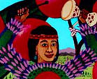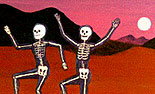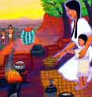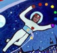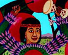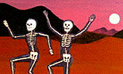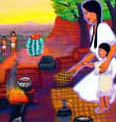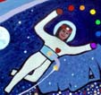
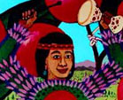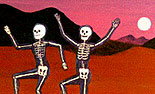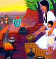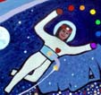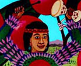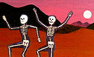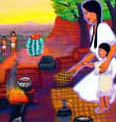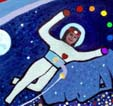In college, David took classes in arcane subjects, ranging from Sanskrit to Aztec cannibalism to primate behavior. Actually, he probably took one too many anthropology classes for his own good. As a result he tends to re-examine the myths in our own culture with an odd vision, as well as inventing his own legends and tall tales. He believes that the myths of any culture must be retold for every new generation because of changes in technology and the environment and our understanding of them. For instance, Paul Bunyon, the giant who chopped down thousands of trees daily, was an appropriate hero for a culture in the midst of clearing land for agriculture and settlements. However, nowadays in the United States it is more heroic to plant and preserve forests than to destroy them. One of the many paintings and stories David has in his head but not in the real world in a retelling of the Paul Bunyon legend, with the giant recast as something less than a hero.
Many of his "New Myths" revolve around Mother Nature. In David's vision, she left Earth unattended too long while partying at an intergalactic soiree. She receives the news that things are going wrong and must come flying back through space still in her party dress (and understandably upset) to discover that humans have evolved too far and have began depleting the ozone, killing off the buffalo, and clearcutting forests, and so she must begin repairs and education. "Fixing the Ozone." is a part of this tale, and is more prayer than story.